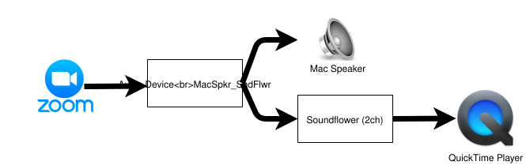
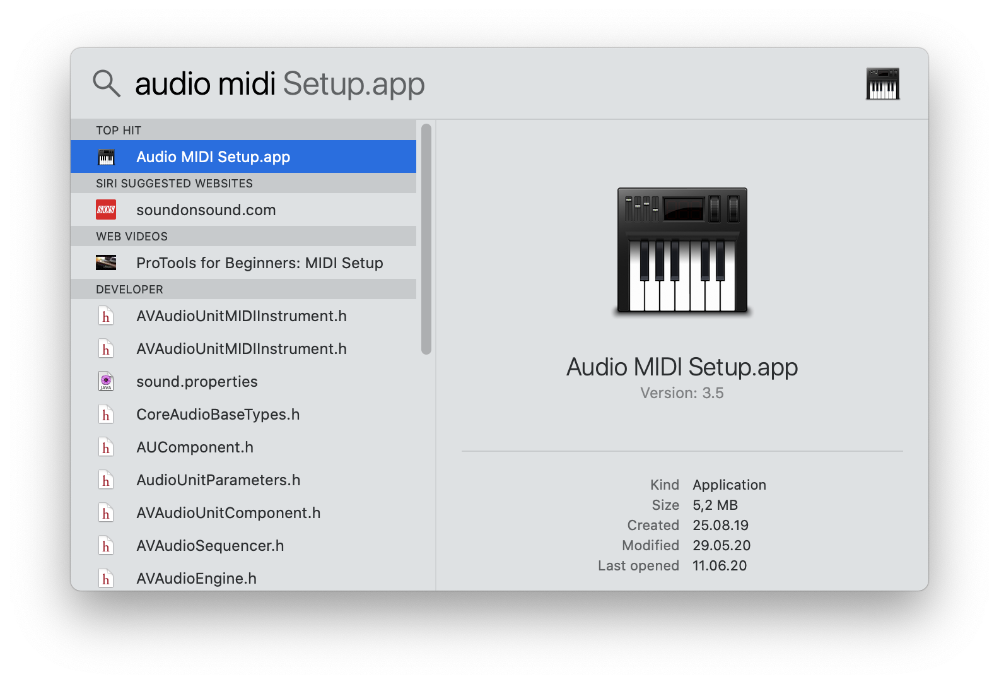
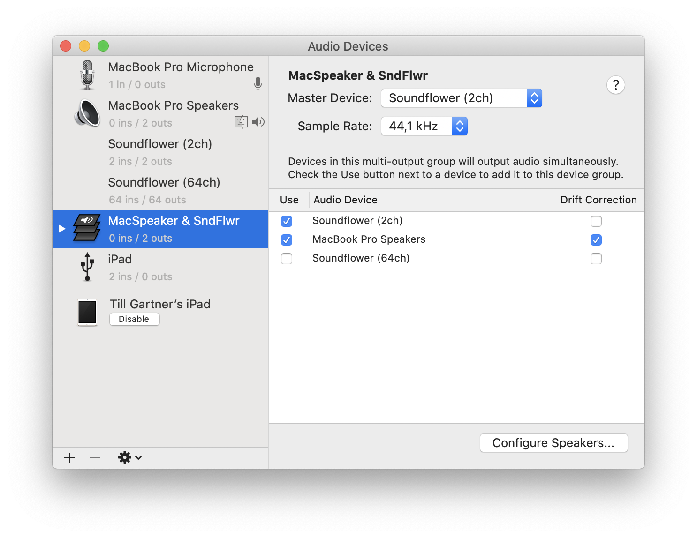
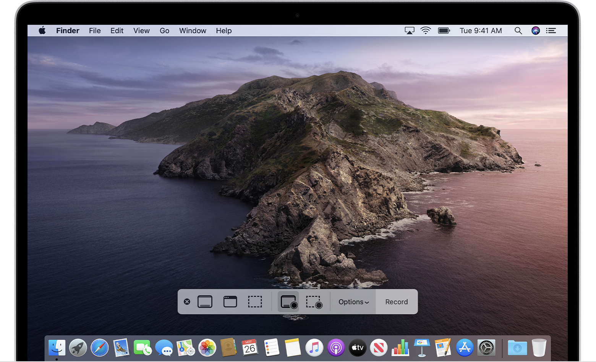

"Mac: Bildschirm und Ton aufnehmen"
Kurzfassung Um den Bildschirm Ihres Macs zusammen mit dem Ton (z.B. eine Zoom-Sitzung) aufzunehmen, können Sie Soundflower verwenden.
Hier ist, was ich erreichen wollte: Eine (Video-)Aufnahme dessen, was auf dem Bildschirm meines Macs passiert, einschließlich des Tons. All dies, während ich gleichzeitig hören kann, was passiert. In meinem Fall wollte ich eine Zoom-Klasse aufnehmen, aber ich denke, diese Einrichtung könnte in vielen Situationen nützlich sein.
macOS verfügt über ein großartiges integriertes Bildschirmaufnahme-Tool: QuickTime Player (ja, es nimmt auf, auch wenn der Name Player sagt 😀).
Das einzige Problem beim QuickTime Player ist der Ton: Die Auswahlmöglichkeiten sind Internes Mikrofon oder Kein. Das passt gut, wenn Sie ein Tutorial aufnehmen möchten, bei dem der Ton das ist, was Sie über das Mikrofon erklären, aber es passt nicht zu meiner Situation.
Hier kommt SoundFlower ins Spiel. Es ist Open Source, ausgereift und zuverlässig (getestet von mir und weitaus erfahreneren Kollegen - und immer sehr gut bewertet). SoundFlower ist, wie es heute ist (das ist Sommer 2020), kein Programm mit einer Benutzeroberfläche, sondern nur eine macOS-Systemerweiterung. Das ist etwas, das Sie als Benutzer nicht sehen, aber das im Hintergrund sehr hilfreich ist.
Was es in unserem Fall tut: Es erstellt einen neuen, virtuellen Tonkanal, der den Tonstrom in zwei andere Ströme aufteilt. In meinem Fall bedeutet das, dass ich in meiner Zoom-Sitzung einen virtuellen Ausgang anstelle des Lautsprechers meines Macs auswähle. Ich nannte diesen Ausgang MacSpkr_SndFlwr. Und dieser virtuelle Strom teilt den Ausgang auf den Lautsprecher des Macs und den (logischen) SoundFlower-Kanal auf. Dann wähle ich den SoundFlower-Kanal als Eingang für meine QuickTime Player-Aufnahme aus und das war's.

Die TonströmeEinrichtung
Soundflower installieren ist gut beschrieben auf seiner Download-Seite auf Github. Der Prozess mag etwas umständlich erscheinen, funktioniert jedoch gut, wenn Sie ihn Schritt für Schritt befolgen. Beachten Sie, dass es eine Weile gedauert hat, bis ich verstanden habe, was sie mit "Sobald Sie dort sind, sollte es eine 'Zulassen'-Schaltfläche (**) geben, die Sie anklicken müssen, um die Erlaubnis zur Nutzung von Soundflower (Entwickler: MATT INGALLS) zu erteilen." Ich erwartete einen Popup-Dialog mit der Zulassen-Schaltfläche, aber es ist einfach eine Schaltfläche innerhalb des Fensters.
Beachten Sie auch, dass Sie Ihren Mac nach der Installation von Soundflower neu starten müssen.
Sobald Sie Soundflower installiert haben, können Sie ein logisches Audiogerät erstellen, das den Tonstrom aufteilt. Öffnen Sie dazu Audio MIDI Setup. Es ist ein macOS-Dienstprogramm, das sich in /Applications/Utilities befindet. Sie können es auch über Spotlight starten (drücken Sie Cmd + Leertaste) und geben Sie "Audio Midi" ein.

Starten des Audio MIDI Setups über Spotlight
Sobald Sie sich im Audio MIDI Setup-Programm befinden, erstellen Sie ein neues (logisches) Audiogerät: Klicken Sie auf die "+"-Schaltfläche in der unteren linken Ecke und wählen Sie "Multi-Output-Device erstellen". Im rechten Bereich, der erscheint, wählen Sie "MacBook-Lautsprecher" UND "Soundflower (2ch)".

Das neu erstellte Multi-Output-Device
Starten Sie dann Ihren QuickTime Player (dieser ist auf Ihrem Mac vorinstalliert) und erstellen Sie eine neue Bildschirmaufnahme: Menü Datei ➡ Neue Bildschirmaufnahme. Im unteren Teil des Bildschirms erscheint ein schwebendes Menü:

Das schwebende Menü bei der Aufnahme mit QuickTime Player
Öffnen Sie die Optionsliste und wählen Sie "Soundflower (2ch)" als Eingang für die Aufnahme. Klicken Sie auf "Aufnehmen" und los geht's: Starten Sie jetzt Ihre Zoom-Sitzung, maximieren Sie das Fenster und Ihre gesamte Zoom-Sitzung wird in einer .mov-Datei aufgezeichnet.
Ich hoffe, diese Anweisungen waren hilfreich; zögern Sie nicht, Fragen zu stellen, wenn Sie welche haben.
Referenzen
- Wie man den Bildschirm auf Ihrem Mac aufnimmt von Apple Support
- Soundflower Erklärungen
- Nehmen Sie den Bildschirm Ihres Computers mit Ton auf einem Mac auf von c|net